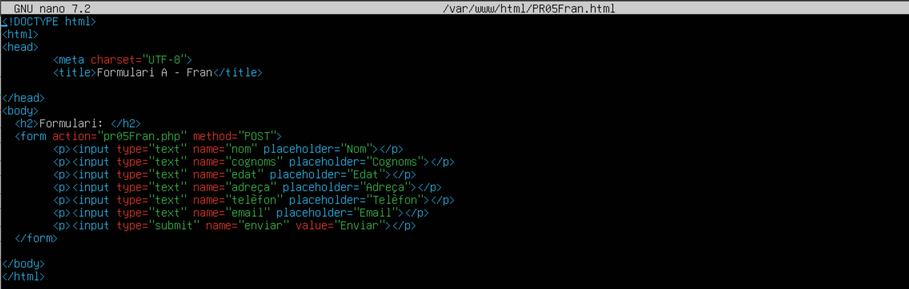
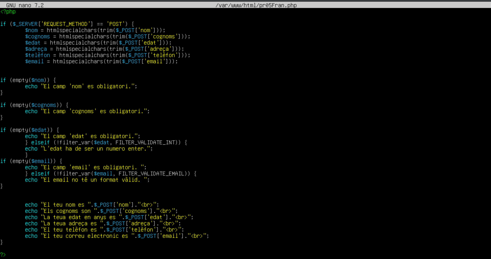
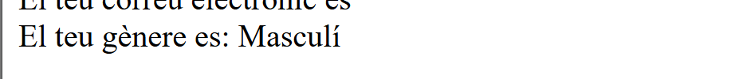
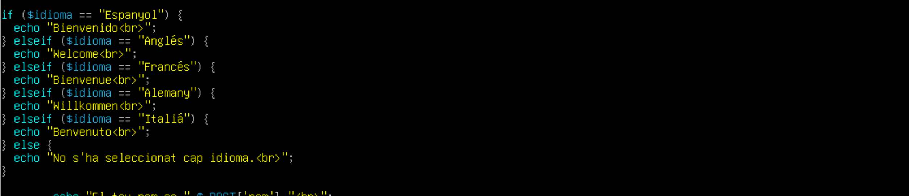
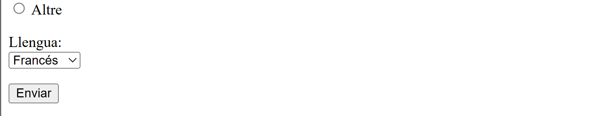
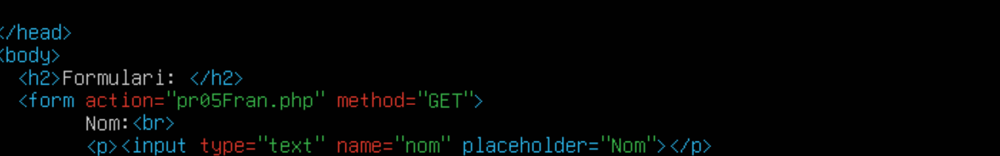
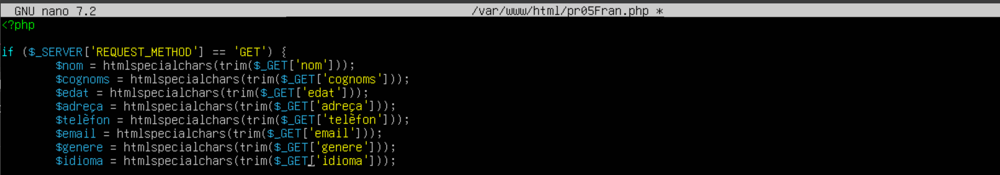
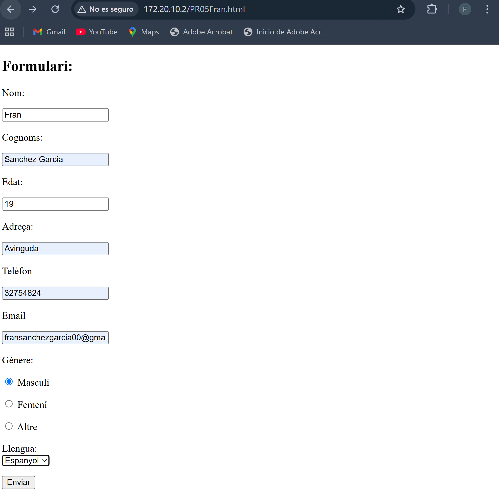
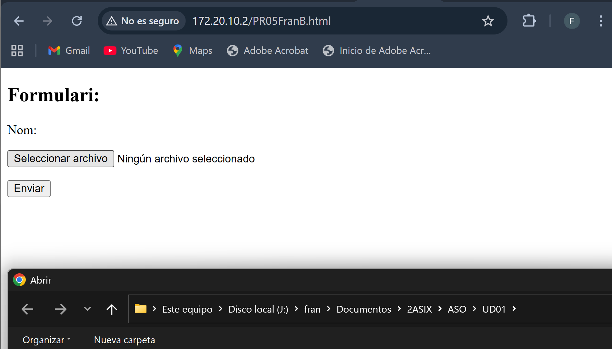
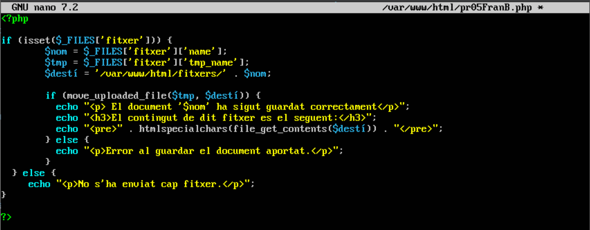

Pràctica de Formularis
Formulari A
Crear un formulari que permeta introduir les dades d’una persona (nom, cognom, edat, adreça, telèfon, correu electrònic) i mostrar-les a la mateixa pàgina una vegada se polse el botó d’enviar. A més, cal validar que els camps no estiguen buits.
Aquest es el formulari:

Amb el seguent HTML i PHP:
 
El funcionament es el següent, i ficarem les dades que es veuen a continuació i el resultat:


Modificar el formulari perquè es puga seleccionar el gènere de la persona (masculí, femení, altre) i mostrar-lo a la pàgina.
He afegit algunes modificacions més el que demana al enunciat: Al HTML:

Al PHP:

Es veu de la següent manera:

Si fiquem les dades, veiem el resultat (Ens fixem sols en el que hem afegit nou, que es l’elecció de gènere)

• Ampliació del formulari per enviar mitjançant POST
Modificar el formulari perquè s’envie la informació mitjançant el mètode POST a una altra pàgina anomenada processar.php. En aquesta pàgina, mostrar les dades ingressades al formulari, igual que anteriorment i les seues modificacions.
Les modificacions canvien, i es veuen al PHP, canviant la URL de .html al .php que tenim configurat.
Modificar el formulari perquè es puga seleccionar els idiomes que parla la persona (espanyol, anglès, francès, alemany, italià) i mostrar-los a la pàgina. En donar-li al botó d’enviar, cal mostrar un missatge de benvinguda en aquest idioma. Pot haver-hi diversos idiomes, i si no heu seleccionat cap, mostrar un missatge que indique que no s’ha seleccionat cap idioma.
Al HTML he afegit estes línies d’idioma per a que es compleixca l’enunciat:

Al PHP he afegit les següents línies d’idioma:

Al formulari s’observa el seguent, he escollit Francés per exemple:

I al enviar el formulari el seguent:

• Enviament mitjançant GET
Prova el formulari amb diferents dades i canvia el mètode d’enviament de POST a GET.
He fet estos canvis al HTML (canviar el mètode de POST a GET):

He fet estos canvis al PHP:


He ficat estes dades al formulari:

I els canvis s’observen a la pròpia URL:

Quines diferències observes?
Que els missatges que escrius es mostren directament a la URL
Formulari B
Crea un formulari que permeta enviar un fitxer de text. El fitxer ha de ser guardat al servidor i mostrar un missatge indicant que s’ha guardat correctament. A més, caldrà mostrar el contingut del fitxer a la pàgina.
Primer he copiat els fitxers del formulari A per a agafar-los de base.

Al accedir al HTML he fet aquest formulari:

Al navegador podem veure que si fem clic al botó de Seleccionar archivo podem afegir un fitxer per a pujar-lo.

Ara anem al PHP, el cual he deixat de la seguent manera per a que agafe els fitxers que pujem i els emmagatzeme al directori indicat:

He creat el seguent fitxer amb aquest contingut en Escriptori del meu Windows host.

Després he creat dins de /var/www/html/ la carpeta que es diu al PHP, la cual es on es desaran els fitxers que es fiquen al HTML:

Després de reiniciar el servici d'apache, provem de la seguent manera:
1- Pujem el fitxer des del navegador.
 (En el cas de que done error, poden ser els permisos sobre la carpeta a la que volem guardar el fitxer)
(En el cas de que done error, poden ser els permisos sobre la carpeta a la que volem guardar el fitxer)
2- Veiem que s'ha guardat correctament pel missatge, i veiem el contingut del fitxer.

3- Comprovem al directori asignat al PHP si s'ha enviat.